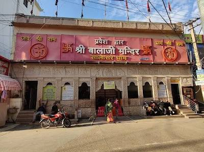

Salasar Balaji Temple (Shekhawati, Rajasthan)

Introduction
Salasar Balaji Temple is one of the most प्रसिद्ध Hindu temples dedicated to Lord Hanuman. It is located in the town of Salasar in the Churu district of Rajasthan, in the Shekhawati region. The temple is widely known for its unique idol of Lord Hanuman with a moustache and beard.
Location
The temple is situated in Salasar town in Churu district of Rajasthan. It lies in the Shekhawati region and is well connected by road. It is approximately 57 km from Sikar and around 170 km from Jaipur.
History
The history of Salasar Balaji Temple dates back to the 18th century. According to legend, a farmer in a village called Asota found an idol of Lord Hanuman while ploughing his field.
On the same day, the local ruler and a devotee named Mohandasji both had dreams in which Lord Hanuman instructed them to take the idol to Salasar. Following this divine instruction, the idol was brought to Salasar and स्थापित in the temple.
Since then, the temple has become a major pilgrimage site and is visited by devotees from all over India.
Discovery of the Idol
The idol of Lord Hanuman was discovered in Asota village in Nagaur district. It is believed that the idol appeared miraculously from the ground while a farmer was working in his field.
The idol was later transported to Salasar with great श्रद्धा and devotion, where the temple was built.
Construction of the Temple
The temple was constructed by Mohandasji Maharaj, a great devotee of Lord Hanuman. Over time, the temple was expanded and renovated by devotees and local authorities.

Architecture
The temple is built using stone and marble and features beautiful carvings and silver doors. The sanctum houses the idol of Balaji, which is richly decorated with ornaments, flowers, and चोला.
Deity (Balaji / Hanuman)
The deity worshipped here is Lord Hanuman, also known as Balaji. Unlike most Hanuman idols, the idol in Salasar has a beard and moustache, which makes it unique. Devotees believe that Balaji fulfills wishes and protects them from troubles.
Rituals & Aarti
- Mangala Aarti (early morning)
- Rajbhog Aarti (afternoon)
- Sandhya Aarti (evening)
- Shayan Aarti (night)
Festivals
The most important festivals celebrated at Salasar Balaji Temple are Chaitra Purnima and Ashwin Purnima. During these occasions, large fairs are organized and lakhs of devotees visit the temple.
- Chaitra Purnima Mela
- Ashwin Purnima Mela
- Hanuman Jayanti
Chaitra & Ashwin Melas
These grand fairs are held twice a year during the full moon days of Chaitra and Ashwin months. Devotees from different parts of the country visit Salasar to seek blessings and participate in religious activities.

Sacred Practices
Devotees often tie coconuts and sacred threads in the temple परिसर as a symbol of their wishes. It is believed that once the wish is fulfilled, devotees return to untie the thread and offer thanks.
Beliefs & Significance
Salasar Balaji is considered very powerful, and devotees believe that sincere prayers here can fulfill desires, remove obstacles, and bring prosperity and peace.
Best Time to Visit
The best time to visit the temple is during the winter months from October to March. Visiting during the melas provides a vibrant and spiritual experience.
Conclusion
Salasar Balaji Temple is one of the most important religious destinations in Rajasthan. With its unique idol, strong spiritual beliefs, and grand fairs, it attracts millions of devotees every year.